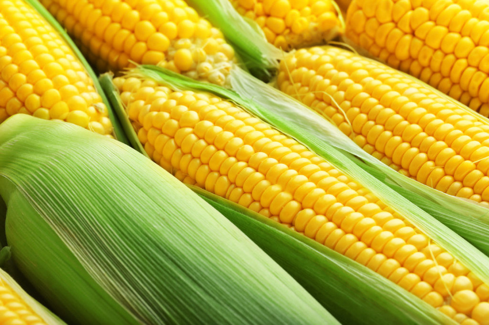
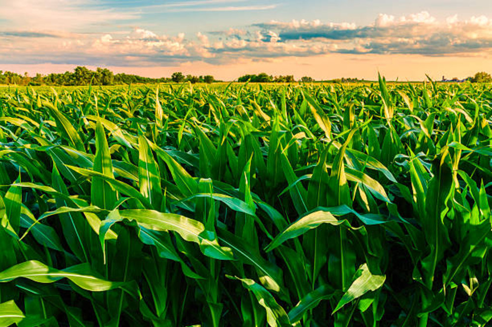
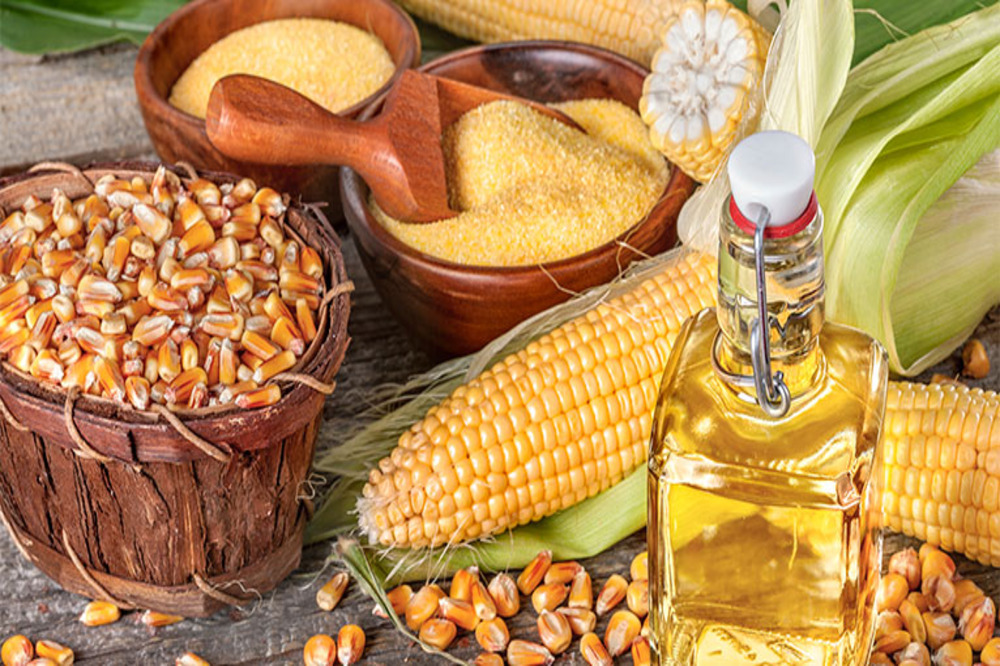

Corn
Corn is a key commodity for farmers that needs careful planning and management throughout the growing season. For optimal development, they must pick the suitable seed kinds, prepare the soil, and provide enough water and fertiliser availability. Farmers must also safeguard their maize crops from pests and illnesses that can harm the plants and limit output.
Cost of Planting Corn
When planting corn, farmers pay expenditures such as seeds, fertiliser, insecticides, and labour. They may also need to spend money on irrigation systems, land preparation, and storage. Weather and market pricing, for example, might have an influence on profitability. Farmers must carefully plan and control their expenses in order to be profitable in maize growing.
Return after selling Corn
Farmers believe the return on corn sold to be critical to their profitability. Factors such as supply, demand, weather, and government legislation all have an impact on the price. Costs of production, including as seed, fertiliser, equipment, labour, and land, must also be addressed. Profit margins may be unpredictable and fluctuate with the market, necessitating cautious management. Profitability is dependent on maximising returns.